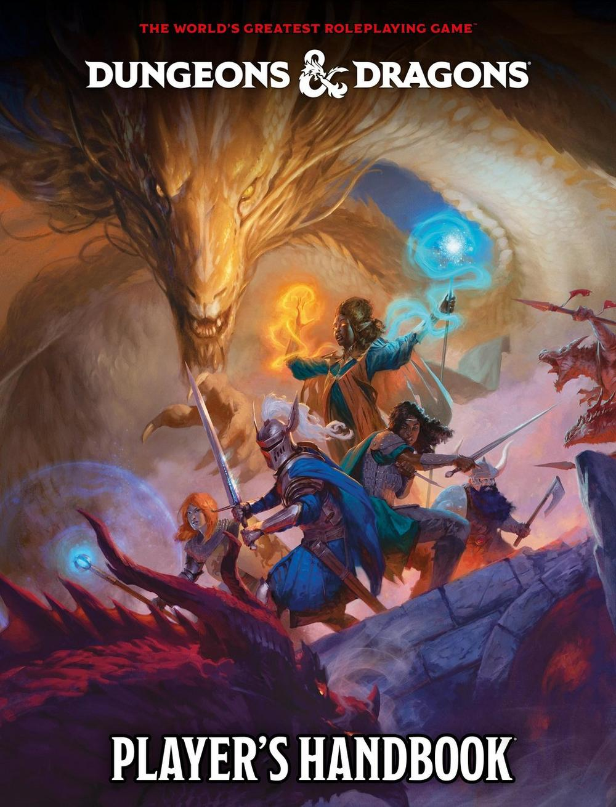
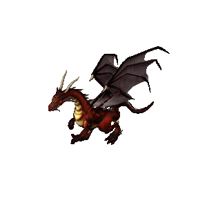

So, you've stumbled upon my website, have you? Well, while I have you here, make yourself comfortable. Take a seat, have a drink. You'll be here a while, because I was given ⋆｡°✩ Complete control over what I get to talk about ✩°｡⋆ So you know what that means?
I'm gonna info dump about my Dungeons & Dragons characters :3c
But first, what even is D&D?
What Is D&D?
The world's nerdiest- sorry, "largest role-playing game," according to the offical D&D Beyond website, Dungeons & Dragons is a tabletop roleplaying game. What that means, basically, is that everyone sits around a table throwing math rocks and collectively hallucinating. Since 1974, D&D has offered geeks around the world a way to slip into fantasy. Wizards Of The Coast, the publisher behind D&D, regularly releases "sourcebooks" that add species, classes, characters, and stories to the canonical world of Toril, typically on the continent Faerûn. The premise is that the Game Master, or for D&D specifically the Dungeon Master (DM), guides player characters through an adventure in a collaborative story-telling setting, where players have control of their characters and interact with the world through puzzles, conversations, and combat. The fun thing about D&D is that you actually dont need, like, anything. The sourcebooks are prewritten modules of story, but many groups do something called "homebrewing" where the DM can create any level of the game, from minor things like items to the entire world. So, with that in mind...

The 2024 Player's Handbook sourcebook. This book contains basic rules, species, and classes for character creation.
My Adventuring Log

Over my seven years with D&D, I've played almost exclusively in homebrew settings. My party and I have used official species and classes, but the world we play in and the stories we tell through it are largely detached from Faerûn. Many of these places are still that typical medieval high fantasy, but with fun, stupid twists and rules because we're a group of storytellers and god damnit we're going to make things way more complicated than it needs to be.
And I know what you're probably thinking. This is just some silly little game, how could it possibly matter that much? But it does. It matters to me more than I could say in words. Because while some people have come and gone from the table in the past, I've played with the same DM and one other player for seven years, and through that, I've gotten closer to and met people that are so important to me. I love the stories we tell, the laughs we share, the characters we create and talk about way too much, it's so special. And in a world where art and creativity continues to be outsourced to metal and wires that could never understand or create with any real meaning, the art my friends and I make is so nuanced, so flawed, so real, so human. I'm constantly in awe and inspired by what they create, and that community and love is the foundation of what makes D&D so deeply personal and important to me.
Anyway, that got too real. Let's dive back into the make-believe, yeah? The group I play with now and have for the last three years have completed one full campaign and are in the midst of another. Below, I've sectioned information on those worlds and more about us players into their own pages. Click on them to learn more!